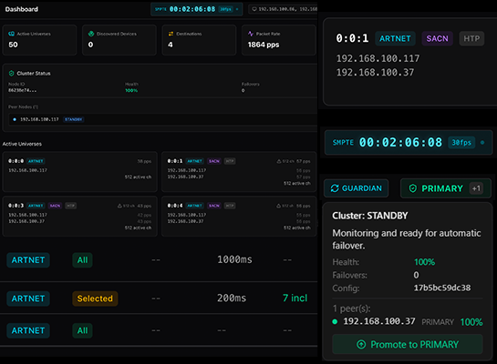
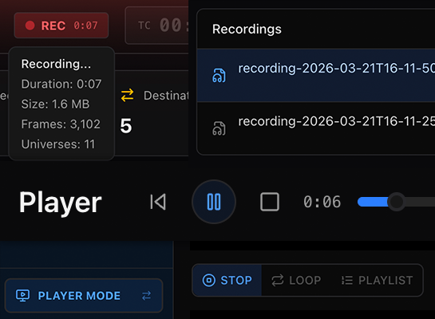
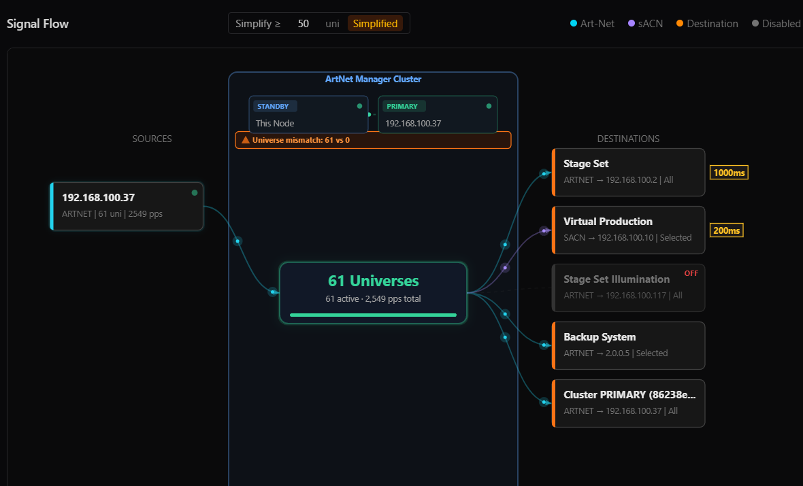
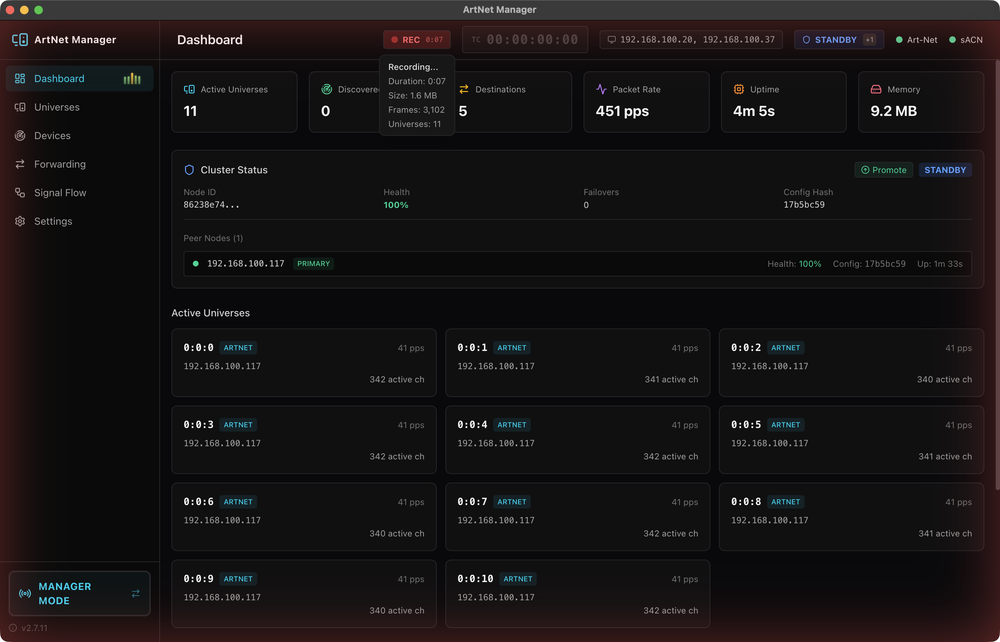
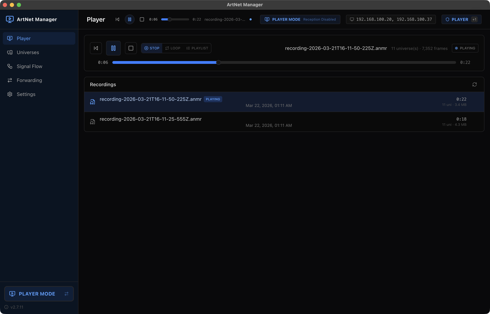
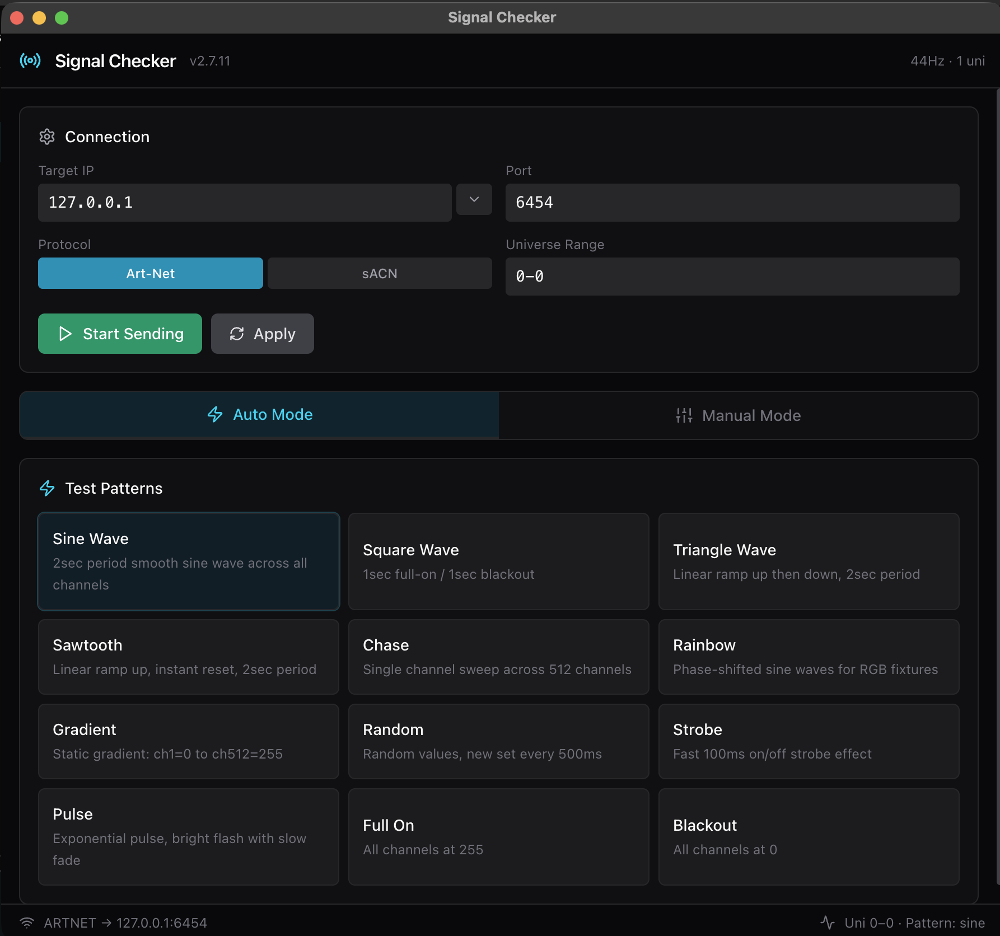

ArtNet Manager
Art-Net / sACN 信号の統合・可視化・記録・転送を一台に。
ライブプロダクション現場のための DMX マネジメントツール。
Art-Net 4
sACN (E1.31)
Cross-Platform
v2.8.9
Art-Net / sACN 信号の統合・可視化・記録・転送を一台に。
ライブプロダクション現場のための DMX マネジメントツール。
Art-Net / sACN 信号を受信し、HTP・LTP・Priority でマージ。宛先ごとに送出するユニバースを選び、オフセットや遅延（0〜10秒）を個別に設定して同時転送。マルチ NIC 対応で、異なるサブネットの信号も一元管理。

受信中の DMX 信号をリアルタイムに記録。独自の ANMR フォーマットでデルタ圧縮し、長時間のキャプチャにも対応。記録した信号はプレイヤーモードでいつでも再生。リハーサルの記録、現場でのバックアップ出力、問題のデバッグに。

512 チャンネルのグリッド表示、ソースからデスティネーションへの信号経路アニメーション、ダッシュボードでのリアルタイム統計。信号がどこからどこへ、どのように流れているかを一目で把握。



12 種のテストパターン（チェイス、ランダム、グラデーション等）を内蔵。ネットワーク上の機器動作確認やトラブルシューティングに、アプリ内から直接テスト信号を送出。
サブネットスキャン + ARP + 逆引き DNS で、ネットワーク上の全デバイスを自動検出。Art-Net ノード、sACN ゲートウェイからネットワーク機器まで包括的に発見。
外部プロセスがアプリを常時監視し、クラッシュ・OOM・kill -9 を含むあらゆる異常終了から自動復旧。指数バックオフ付き。ライブ現場で止まらない。
複数インスタンスで冗長構成。自動リーダー選出とヘルスモニタリングで、ダウンタイムゼロのフェイルオーバーを実現。権限の移譲も簡単。ノード間の設定同期にも対応。
Art-Net 4 と sACN (E1.31) の両方に対応。プロトコル間の変換・ブリッジも自動で処理。マルチ NIC で異なるサブネットからの信号を同時受信。
フォワーディング設定をファイルに保存・読み込み。複数現場での設定使い回しや、バックアップに対応。






v2.8.9 — macOS版を Apple Developer ID で署名・公証。Gatekeeper の警告なしで起動可能になりました。
ArtNet Manager は MOOV by Composition Inc. のもと、llcheesell がリリースしたアプリケーションです。 プロダクションレディなソフトウェアを目指して開発を進めていますが、現在はテスト段階であり、動作の完全な検証は完了していません。 本ソフトウェアの使用に起因するいかなる損害・事故についても、開発者は一切の責任を負いかねます。
バグ報告や機能リクエストはこちらから。開発の参考にさせていただきます。
バグ報告・機能リクエスト現場に根差した、信頼性の高いツールを目指しています。皆さまのフィードバックが、このアプリをより良くします。